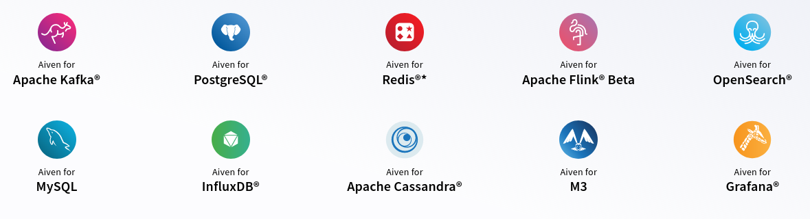

Open Source
In professional software development
Outline
- What is Open Source?
- Getting started
- Open Source at work?
What is Open Source?
Open Source: is computer software that is released under a license in which the copyright holder grants users the rights to use, study, change, and distribute the software and its source code to anyone and for any purpose..
Some common licenses:
- Apache License v2
- MIT
- GPL v3 (and derivatives)
- and many more… https://opensource.org/licenses/
Free to use:
No restriction on how the software should be used.
Free to modify:
Derived works are allowed.
Free to inspect:
Source code is distributed with the program (or library).
Free to redistribute:
Software can be sold or given away.
Some well known Open Source Projects:
- GNU/Linux
- OpenSSL
- Kubernetes
- Node.js
Examples of not really Open Source Projects:
- Elastic
- MongoDB
- KSQL
Why?
They all restrict usage in some way.
What is Open Source about?
In short, about community, collaboration, and working with others to reach something bigger.
Getting started
Sounds cool, but…
No no! Anyone can contribute to Open Source. One doesn't need to be and expert on a topic!
How OSS can benefit you?
- Improve your programming skills
- Improve your non-technical skills
- Learn new tools or frameworks
- Have an online portfolio
- Make connections
Where do I start?
Some definitions:
- Contributor: Person who did an action that helps a project (documentation, feature, bug fix, reported issue…)
- Committer: Person who can decide which change request are incorporated into the project
Some definitions:
- Upstream: Primary repository for an Open Source project
- Fork: Copy of a repository in order to start a new community around it
- Clone: Copy of a repository meant for writing changes and contribute them back
Identify your skills
Find out your current strengths, but also what you want to improve or learn!
Ideally, you should come up with your goals as well.
Pick a project
Short list some projects, and try to rank them by community friendliness.
Good community
Some factors that hint at a good community:
- Hundreds of contributors
- High activity in issues AND pull requests
- Number of open pull requests on the "tens"
- GitHub's community standards page (Karapace)
Files to notice - License
This file contains the text of the license of the project. Make sure it's an open source one.
Files to notice - README
In GitHub this file is directly displayed by default. This page should be descriptive and explain the project.
Files to notice - Code of conduct
Recent addition to projects. This file is the contract from the project's leadership towards to community in regards to behaviors that are not tolerated.
The most common one is the Contributor Covenant.
Files to notice - Contributing
Most important file to read before contributing. In here the process describing how to contribute to the project is described.
Pick a task
Read all the files mentioned before, and follow the described process to start working on an issue.
Prepare to work
- Fork the repository
- Clone the repository on your machine
- Open your preferred IDE or text editor
- Install tooling needed
- Build the project
Work on a task
Write the feature, or fix the bug. And don't forget about writing tests! Check if you need to run linters or style checkers.
Commit your work frequently!
Submit your work
Make sure you follow the rules described in Contributing before actually submitting your work.
git push the changes and create a pull request.
Wait for reviews
Now it's time to wait for contributors and committers to review your work and leave you feedback. Address their feedback in a timely manner.
Many projects require 1 or 2 committers approving (LGTM) your changes.
Congrats on your first PR!
But wait!
It's not only about coding! Contributing to Open Source is also:
- Writing bug reports and reproducers
- Answering questions on the mailing list
- Triage issues
- Review other's PRs
Extra legal agreements
Some times projects might require extra agreements to sign to be able to contribute to the project.
CLA
Contributor License Agreement. This is a legal document to be (digitally) signed. It's usually done when the project owners want more rights than the ones the license already grants. This might mean they want the full copyright of the project or they want to dual license the project.
And example of CLA is the Apache CLA V2.2
DCO
Developer Certificate of Origin. This is a statement from the person contributing stating they do have the rights to contribute that code.
Open Source at Work?
Corporations use OSS?
Yes! The question should not be if they use it, but how much.
Directly or indirectly, every workplace uses OSS.
What about them producing OSS?
There are 2 main ways:
- 1st party OSS - Internal projects
- 3rd party OSS - External projects
1st party OSS
This is the most common case of outbound contributions from corporations.
But why?
Why not keep it private and sell it? Some reasons might include:
- It's not part of the core business
- For publicity / recruitment
- The project has the potential to transcend the initial expectations
So can I simply do OSS at work?
It depends. You need to review your contract and talk to your manager, and usually you'd need some convincing.
How to finance this open source work?
When it's not part of the core business, or open source collaborations main purpose are marketing or talent acquisition, budget comes from said parts of the company.
Monetize the convenience
- Is installation cumbersome?
- Is customization hard?
One can sell prepackaged solutions of open source projects.
Monetize support
Specific requirements will take precedence for customers with support.
Monetize management
Open Source projects are really specialized and they need a high degree of experience to operate them. This caused the proliferation of "as a Service" companies (PaaS, SaaS, IaaS, …)
Meet Aiven
Aiven makes setting up cloud open source projects so simple anyone can do it. Our set-it-and-forget-it solutions take the pain out of cloud data infrastructure.
 All previous names are trademarks of their respective owners.Thanks!
Josep Prat — @jlprat — @aiven_io